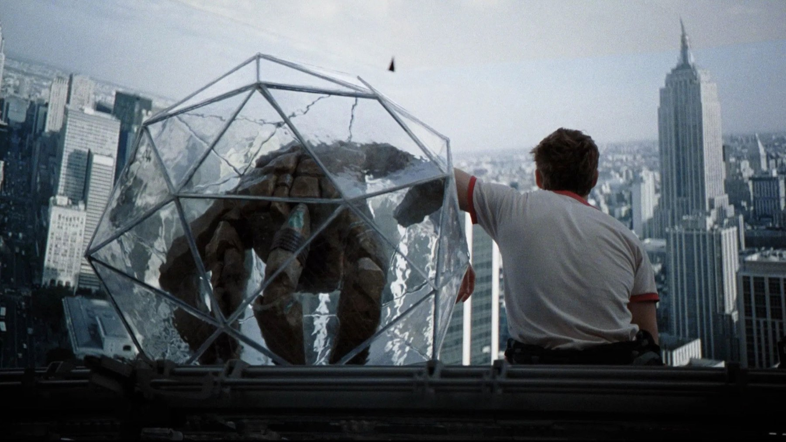

Project Hail Mary: 6 curiosità sul film con Gosling
Il pupazzo di Rocky, una nave spaziale costruita davvero e un contratto firmato un anno prima dell'uscita del libro: cosa c'è dietro il film di Lord e Miller
Prima ancora che il libro arrivasse in libreria, a Hollywood qualcuno aveva già deciso che sarebbe diventato un film con Ryan Gosling. È la prima delle sei storie nascoste dietro L'ultima missione: Project Hail Mary, uscito nelle sale italiane il 19 marzo 2026: un film di fantascienza che, a differenza di molti suoi simili, ha preferito costruire le cose invece di disegnarle al computer. Ecco i sei retroscena che ci hanno colpito di più, dal contratto alle location.
Il film è stato venduto prima del libro
Il romanzo di Andy Weir è uscito il 4 maggio 2021. I diritti cinematografici, però, erano già stati ceduti alla MGM nel marzo 2020 per 3 milioni di dollari, più di un anno prima, e con Ryan Gosling già confermato come protagonista e produttore. Poche settimane dopo, a maggio 2020, sono arrivati Phil Lord e Christopher Miller come registi.
Perché conta: il film non nasce dal successo del libro, ma da un'intuizione sul libro. Chi lo ha comprato scommetteva su una storia ancora sconosciuta al pubblico, e la scommessa si è rivelata giusta, perché il romanzo ha poi vinto, tra gli altri, il Goodreads Choice Award per la fantascienza nel 2021.
Dietro il romanzo c'era un libro abbandonato
Dopo il successo di The Martian, Weir aveva annunciato un secondo romanzo provvisoriamente intitolato Zhek, con alieni, telepatia e viaggi più veloci della luce. Lo ha lasciato da parte per dedicarsi ad Artemis, ma non ha buttato tutto: due ingredienti di quel progetto sono finiti in Project Hail Mary, tra cui una sostanza capace di assorbire energia. È l'antenata degli astrofagi, gli organismi che nella storia stanno spegnendo il Sole.
Weir ha raccontato di voler inventare un carburante che trasformasse la materia in energia e che sembrasse biologico, non il frutto di un laboratorio o il relitto di un'astronave aliena. Il risultato è il punto di partenza di tutta la trama: una minaccia che non ha un volto, ma un metabolismo.
Rocky è un pupazzo vero, ispirato a Yoda
L'alieno che accompagna Grace è stato costruito dal creature designer Neal Scanlan e animato sul set da James Ortiz, che gli presta anche la voce sintetizzata. Il modo in cui Scanlan lo ha convinto dice molto del progetto: stando a Inverse, Scanlan gli ha spiegato il ruolo così: «Tu sei Frank Oz, e io sto facendo Yoda per te».
Non esisteva un solo Rocky. Il team ne ha realizzati diversi: una versione in fibra di vetro con parti animatroniche, una ispirata al bunraku giapponese, in cui i burattinai lo muovono a vista, e una completamente animatronica per le scene più complesse. Ortiz guidava un gruppo che sul set chiamavano scherzosamente i Rockyteers.
Perché conta: Gosling recita davvero con qualcosa che occupa lo spazio, e la differenza si vede nei momenti più silenziosi. Ne parliamo anche nella nostra recensione di Project Hail Mary.

Metà di Rocky è digitale, e Weir lo conferma
Il pupazzo non basta da solo: come ricorda anche Movieplayer nell'intervista ai registi, circa metà delle inquadrature di Rocky ha richiesto il lavoro degli artisti di Framestore, che hanno fuso l'animazione digitale con la recitazione fisica del set. Andy Weir ha spiegato che solo uno dei pupazzi era quello puro: gli altri avevano meccanismi parziali, e alcuni erano privi di braccia, aggiunte poi in post-produzione. Nel modello a servomotori un cavo spesso, per l'energia, spuntava dal guscio: al computer lo hanno fatto sparire.
C'è poi un dettaglio che spiega la tenerezza del personaggio. Rocky non ha né occhi né bocca, quindi il carattere doveva passare dal movimento. Lord e Miller hanno raccontato che al team sono state date informazioni di contorno, come anelli nuziali, simboli di famiglia e canzoni speciali, per dare ai burattinai una storia da interpretare. Per Lord il cuore del film è semplice: per salvare il mondo bisogna farsi un amico.
L'astronave esiste davvero: niente green screen
La Hail Mary è stata costruita per intero come set pratico agli Shepperton Studios, nel Surrey. Lord e Miller hanno scelto fondali fisici invece del chroma key, e il direttore della fotografia Greig Fraser ha girato con telecamere Arri Alexa 65. Le riprese sono durate dal 3 giugno al 26 ottobre 2024.
Perché conta: la luce che cade sulla plancia e sui pannelli è luce vera, quindi il volto di Gosling reagisce a un ambiente che c'è. Un approccio opposto, tutto digitale, è quello di Avatar: Fire and Ash, a cui abbiamo dedicato un pezzo di curiosità sul terzo film. In F1 con Brad Pitt, invece, la scelta pratica riguardava le auto in pista, come racconta la nostra raccolta di curiosità sulle corse.

L'Inghilterra al posto dello spazio (e di una scuola americana)
Quasi tutto è stato girato nel Regno Unito. Il Mullard Radio Astronomy Observatory, a Lord's Bridge a sud di Cambridge, fa da sede al progetto per salvare il Sole. Una spiaggia sotto l'arco naturale di Durdle Door, nel Dorset, compare in alcune scene. E la scuola media in cui insegna Grace, la Grover Cleveland Middle School, è in realtà la Hemel Hempstead School, nell'Hertfordshire. La produzione si è fermata anche a Portsmouth, alla South Parade Pier, mentre la NASA ha dato consulenza scientifica e l'astronauta Kjell N. Lindgren ha visitato il set.
Un film su scienziati che salvano l'umanità collaborando è nato da un impegno altrettanto collettivo: scuole, osservatori, studi e un pupazzo manovrato da una squadra.
Se volete vederlo, o rivederlo cercando questi dettagli: a ottobre 2026 L'ultima missione: Project Hail Mary è in abbonamento su Prime Video (anche nel canale MGM+) e a noleggio su Apple TV, Rakuten TV, Amazon e CHILI.
Domande frequenti
Quando è uscito Project Hail Mary in Italia?
Il 19 marzo 2026, con il titolo L'ultima missione: Project Hail Mary. Il film dura 156 minuti.
Rocky in Project Hail Mary è un effetto digitale?
Solo in parte: è un pupazzo fisico guidato da James Ortiz e dal suo team, completato dagli artisti di Framestore. Circa metà delle inquadrature di Rocky ha un intervento digitale.
Dove è stato girato Project Hail Mary?
In Inghilterra: gli interni dell'astronave agli Shepperton Studios, poi location reali come il Mullard Radio Astronomy Observatory vicino a Cambridge e Durdle Door, nel Dorset. Le riprese sono durate dal 3 giugno al 26 ottobre 2024.
Fonti consultate (10)
- Wikipedia – Project Hail Mary (film)
- Wikipedia – Project Hail Mary (romanzo)
- Wikipedia – Andy Weir
- ComingSoon – L'autore racconta com'è stato realizzato Rocky
- Inverse – Project Hail Mary Puppeteer Reveals His Frank Oz & Yoda Inspiration
- Movieplayer – Intervista a Phil Lord e Christopher Miller
- MYmovies – L'ultima missione: Project Hail Mary
- Movie-Locations – Project Hail Mary
- TMDB – Project Hail Mary
- JustWatch / TMDB – dove vederlo in Italia